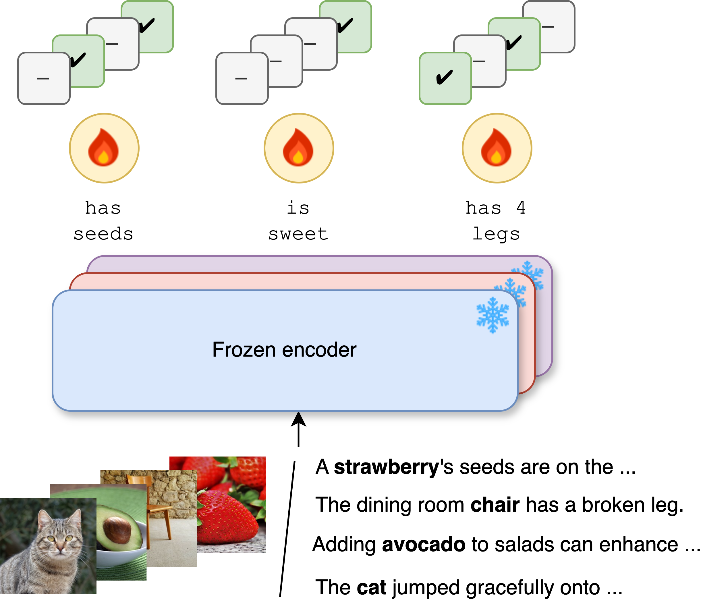
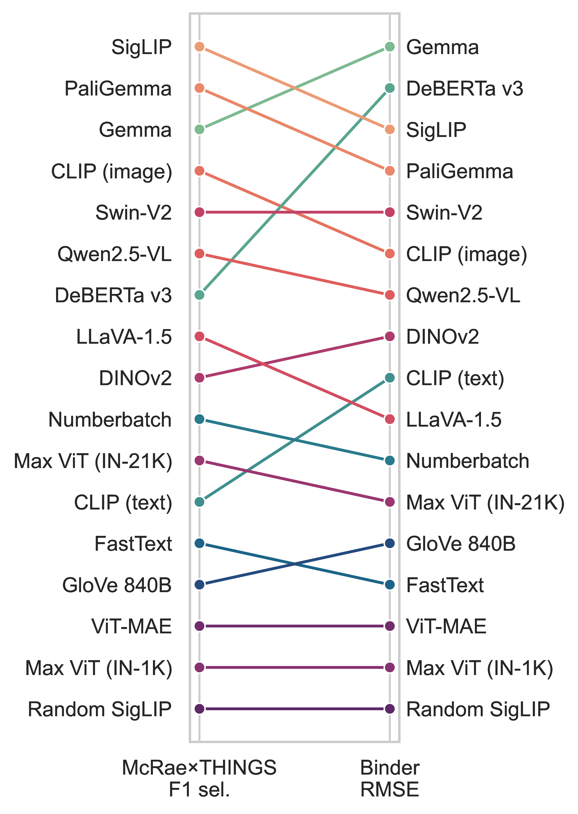

Self-supervised vision models are surprisingly good at predicting the semantic attributes of concepts.
Overview
- Revisit classic work in distributional semantics (e.g. Rubinstein et al., 2015; Collell and Moens, 2016; Lucy and Gauthier, 2017) but with a new twist: larger models and denser data.
- Evaluate how well large-scale pretrained models capture the semantic attributes of concepts; for example, rose is red, smells sweet, is a flower.
- Evaluate on data that go beyond perception, e.g. emotion, encyclopaedic, functional knowledge.
Methodology

- Train linear probes on frozen representations extracted from pretrained vision or language models.
Datasets

Link the concepts from things (Hebart et al., 2019) to two sets of attributes:
- McRae et al. (2005): Commonly elicited attributes.
- Binder et al. (2016): Average ratings for a set of experiential attributes, based on neurobiological mechanisms.
Results: Model Ranking
(Models at the top are better.)
Interactive demo
Below you can visualise and interact with the results:
you can pick two models and a dataset,
and the app will display:
(i) a scatterplot of the performance of the two models on the selected dataset (top), and
(ii) the per concept predictions for a selected attribute (bottom).
To access the demo on a full page, visit
this link.
Since the demo is hosted on Streamlit Cloud, the app goes to sleep due to inactivity, so you might need to get it back up.
Currently, to get the app back up you need to do it from the full page (and not from the embedded app on this page).